MORISQUETA
La morisqueta es originaria de Michoacán,
es un plato mexicano de arroz blanco servido con frijoles de la olla y caldo de jitomate.
El plato ha evolucionado y ahora es frecuente agregar otros ingredientes como queso o incluso carne.
DATOS CURIOSOS:
1.En las costas de Guerrero y Michoacán, la morisqueta a veces es llamada zambaripao.
2. Se acompaña usualmente con tostadas, totopos, o tacos dorados de papa, adobera o pollo
3. En algunos lugares también se acostumbra servir la morisqueta con el aporreadillo
4. No es tan conocida por ese nombre
INGREDIENTES:
- 2 tazas de arroz blanco

- 4 tazas de agua
- sal al gusto

- frijoles de la olla

- aceite y un pedazo de cebolla
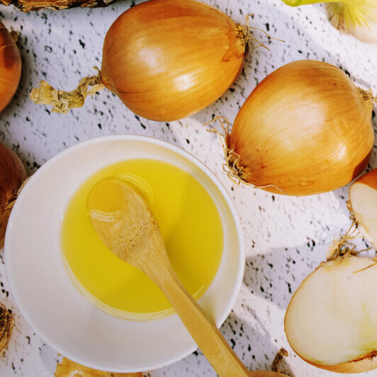
- crema y queso
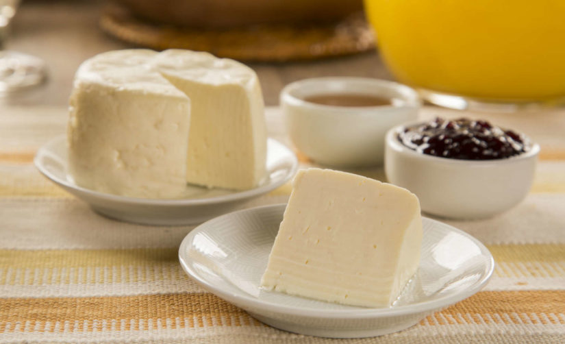
PASOS DE ELABORACION:
- Ponemos a hervir las 4 tazas de agua y agregamos la sal.
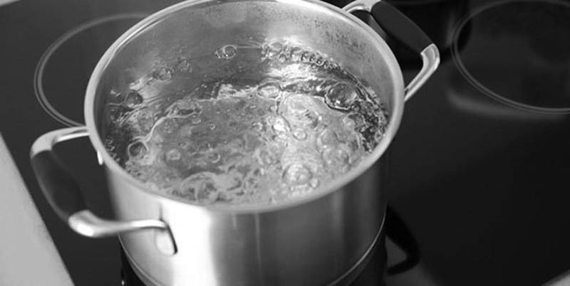
- Despues de que hierva el agua ponemos las 2 tazas de arroz y esperamos a que se coca a fuego lento( aprox unos 20 minutos pero hay que estar checandolo).
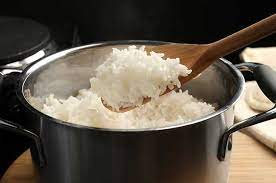
- El arroz que quedo listo.
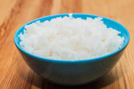
- Frijoles
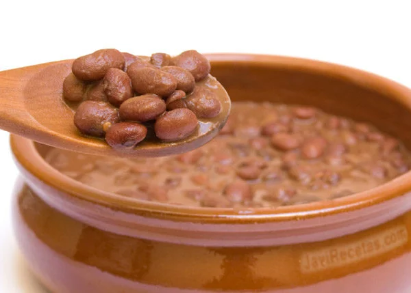
- Ponemos en un sarten el aceite y agregamos unos pedazos grandes de cebolla.
- Ya que la cebolla este quemadita agegamos los frijoles de olla y esperamos a que hiervan un poco.
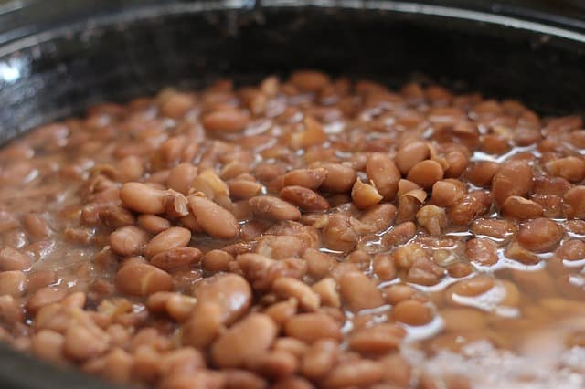
- Machacamos los frijoles (ojo tienen que quedar liquidos)
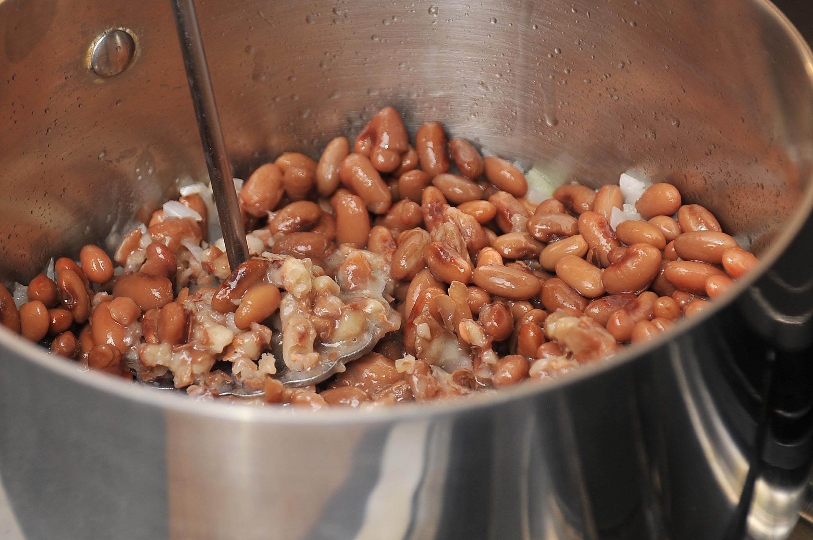
- Despues, retiramos el sarten del fuego.
- Servimos en un plato arroz.
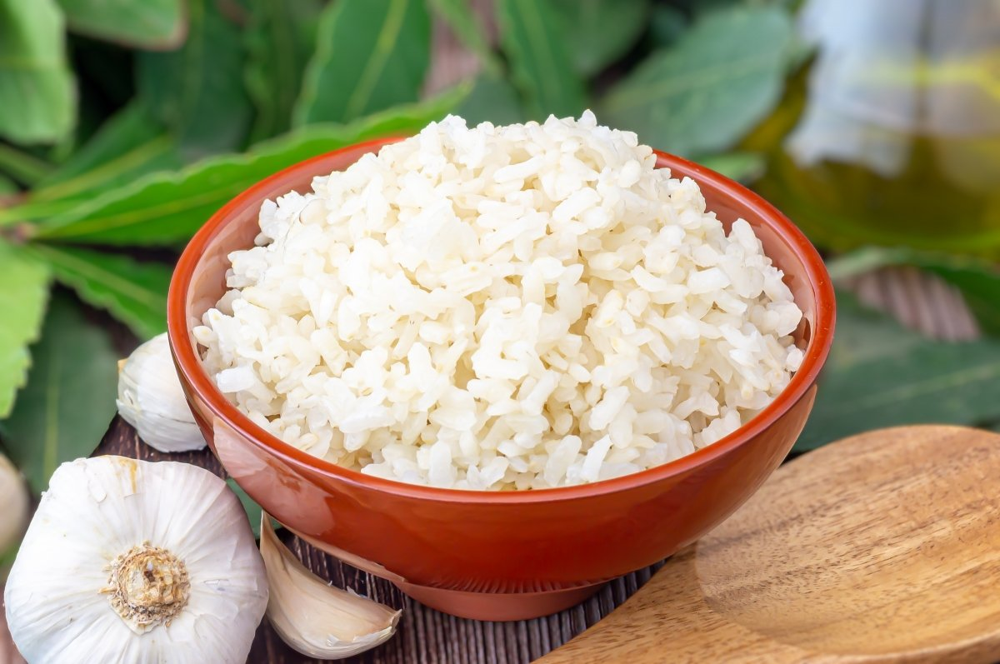
- despues le agregamos frijoles.
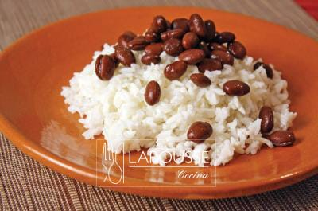
- agregamos crema y queso al gusto.
- Para la presentacion del plato, vertemos el pozole en los platos que vayan a utilizarse para servir.
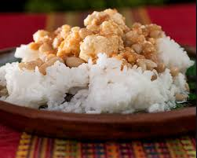